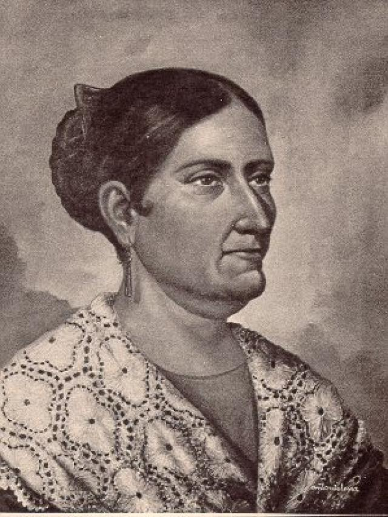
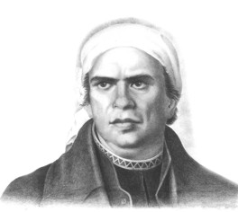

Miguel Hidalgo
Padre de la Patria
Cura del pueblo de Dolores que convocó al pueblo a levantarse en armas la madrugada del 16 de septiembre de 1810.

Josefa Ortiz de Domínguez
La Corregidora
Alertó a los insurgentes de que la conspiración de Querétaro había sido descubierta, adelantando el inicio del movimiento.

José María Morelos
Siervo de la Nación
Continuó la lucha tras la muerte de Hidalgo y convocó el Congreso de Chilpancingo, donde se proclamó la primera constitución.